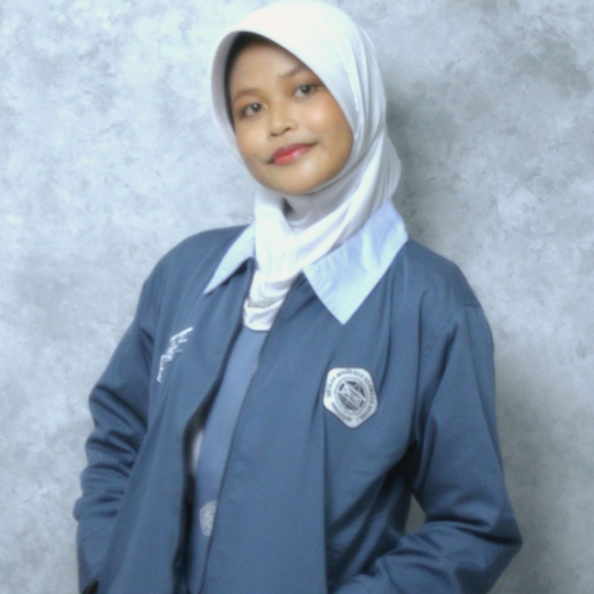

Siswi XI SIJA 1 · Jurusan Sistem Informasi Jaringan dan Aplikasi
"Designing my world, one edit at a time"
| Nama Lengkap | : Callista Candana Fitri |
| Nama Panggilan | : Callista |
| Tempat, Tgl Lahir | : Semarang, 21 September 2009 |
| Jenis Kelamin | : Perempuan |
| Agama | : Islam |
| Sekolah | : SMK Negeri 7 Semarang |
| Jurusan | : Sistem Informasi Jaringan dan Aplikasi |
| Status | : Pelajar Aktif |
| Alamat | : Jl. Galar VII No. 32 RT. 002 RW. 017 Kel. Tlogosari Kulon Kec. Pedurungan Kota Semarang |
Lulus tahun 2015
Lulus tahun 2020
Lulus tahun 2024
Tahun 2024 - Sekarang
Tahun 2025 - sekarang
Anggota OSIS Sekbid 9 (Teknologi Informasi & Komunikasi), berperan dalam mengelola desain konten, editing, dan publikasi media sekolah.♡
Tahun 2026
Mengerjakan project web development dengan membuat website sederhana bertema Roblox, sambil mempelajari layout, styling, dan kerja sama tim.♡
Lihat Project
Tahun 2023
Meraih Juara 3 dalam cabang olahraga renang gaya dada 50 meter pada ajang O2SN.♡